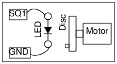

Schematic

Instructions
- The disk is rotated by powering the motor by a 1.5 V cell.
- The disk is illuminated with light from the LED only, no other light should be present.
- Adjust the frequency of SQ1, the disk will appear stationary when it is equal to the frequency
of rotation of the disk.